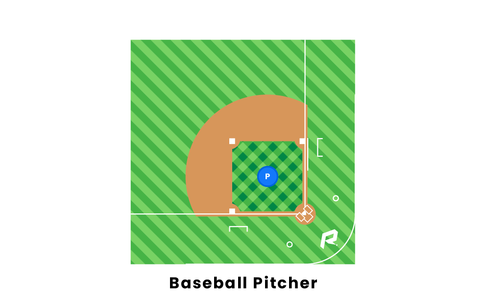
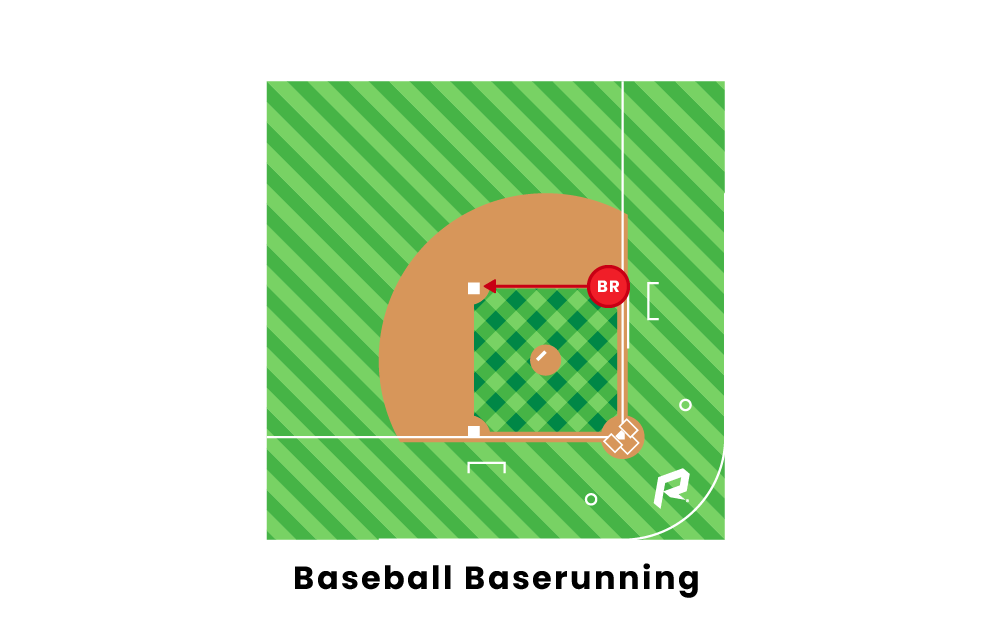
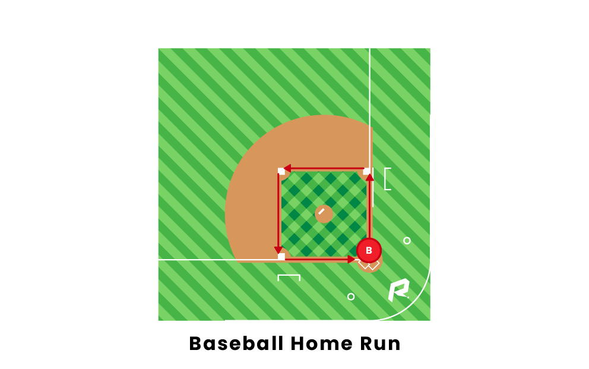
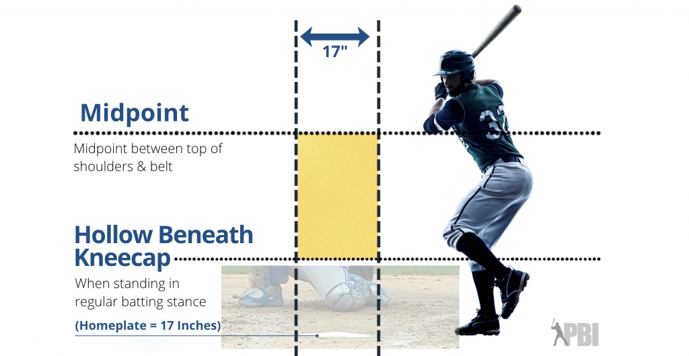
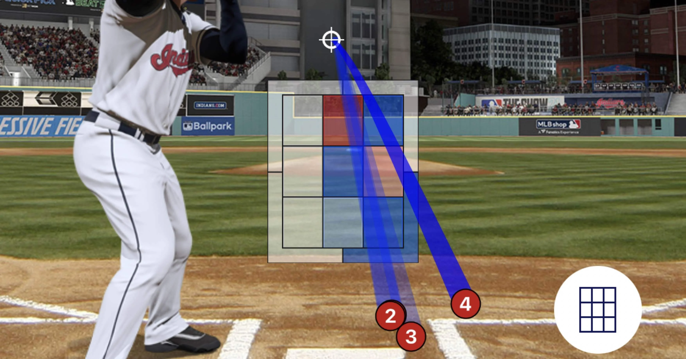
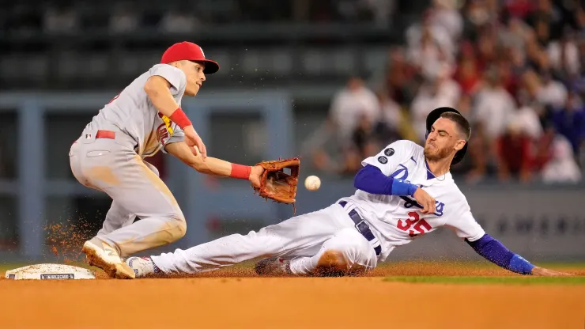
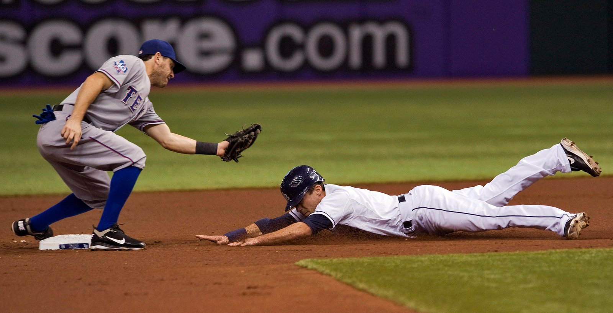
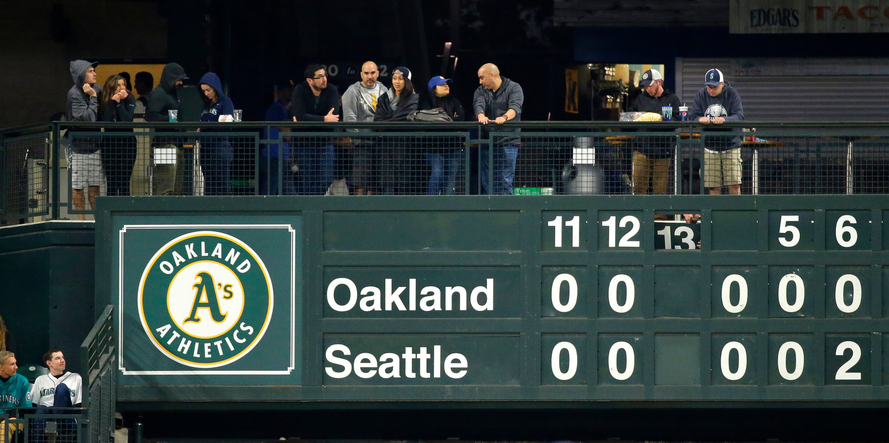

Os jogos de beisebol consistem em entradas (innings), um jogo dura nove entradas. Uma entrada contém duas metade, uma superior e uma inferior, onde as equipas alternam entre jogar defesa (fielding) e ataque (batting). Cada equipe só pode marcar durante a metade (de ataque) da entrada, recebem nove chances por jogo. A equipe de fora, joga no ataque na metade superior da entrada, e a equipe da casa na metade inferior. Dentro de cada uma dessas entradas, ambas as equipas têm um máximo de 3 saídas (outs) se 3 jogadores forem eliminados, termina a oportunidade de marcar e voltam a se defender. Quando uma equipa não está no ataque, eles têm nove jogadores de posição - a bateria (pitcher e catcher), os infielders e os outfielders - que defendem. A equipa com mais corridas no final da nona entrada é a vencedora. Se o placar estiver empatado, são jogadas entradas adicionais, chamadas de “extra innings”.
O objetivo do jogo de beisebol é marcar corridas. Uma corrida vale um ponto e requer um corredor de base no ataque para correr e marcar cada base em ordem. Um baserunner não marca uma corrida se perder uma base ou executar as bases fora de ordem. A ordem deve ser a primeira base, a segunda base, a terceira base e Home plate. Os batters tornam-se em baserunner quando rebate a bola ou são caminhados.
Diz-se que o ritmo dos jogos de beisebol é mais lento do que outros desportos. A razão para isso é que o jogo não é cronometrado, e por isso jogos de beisebol podem tecnicamente durar para sempre se o placar permanecer empatado no final de nove entradas, com o potencial de inúmeras extra innings serem jogadas, se necessário. No entanto, nos últimos anos, a MLB implementou novas regras para extra innings que são projetadas para reduzir o tempo de jogo. Essas regras incluem colocar um corredor na segunda base no início de cada meia entrada durante as extra innings, para tornar mais provável que uma equipa marque.
- Pontuação
Para marcar, um batter deve acertar a bola com o taco na área de campo designada e correr em torno de todas as quatro bases (antes que a equipe de campo seja capaz de coletar a bola e jogá-la para a base para a qual o rebatedor está correndo). Um jogador pode marcar um ponto obrigatório se acertar um home run, o que geralmente significa que a bola saiu da área de jogo, muitas vezes caindo na multidão. Um jogador pode parar em qualquer base se sentir que pode não chegar à próxima base antes de ser marcado. Uma vez que os baserunners atingem a base, eles tentam alcançar com segurança a segunda base, a terceira base e, eventualmente, o home plate, onde marcam uma corrida.
 A maneira mais rápida de marcar é através do home run. Um batter recebe um home run quando rebate a bola sobre os limites da barreira, entre o campo e as bancadas, ou simplesmente quando o jogador contorna todas as bases enquanto a bola ainda está em jogo. Um home run que não ultrapassa a barreira é conhecido como um home run dentro do parque. Um rebatedor recebe um home run solo quando atinge um home run sem baserunners, recebe um homer de duas corridas quando há um baserunner, recebe um homer de três corridas quando há dois baserunners e recebem um grand-slam quando as bases são cheias. Home runs não são fáceis de obter, e os MVPs da liga geralmente variam entre 30-50 durante toda a temporada de 162 jogos.
- A zona de strike
O batter recebe um ataque ou uma bola em cada arremesso, o que é decidido pelo árbitro com base na zona de ataque. A zona de strike consiste na largura da Home plate e no espaço entre os cotovelos e joelhos de cada jogador em termos de altura. Isso significa que jogadores mais baixos e mais altos realmente terão diferentes zonas de ataque, uma característica exclusiva do esporte do beisebol. O número de bolas e strikes para o batter em jogo é chamado de contagem. A contagem é redefinida após cada at-bat. Cada at-bat é um duelo entre o pitcher e o batter.
 - Outs
Cada meia entrada termina, e as equipes mudam do ataque para a defesa (e vice-versa) quando três outs são feitos. Um out é um conceito no beisebol em que o árbitro removerá um batter ou corredor (baserunner) do campo se eles forem “eliminados”. Aqui estão algumas situações em que um jogador é eliminado :
 - Um batter recebe três strikes. Isso é chamado de strikeout.
- Um defesa (jogadores de posição) pega a bola atingida, no ar ,antes que ela toque o chão.
- Um baserunner é eliminado com a bola quando não consegue avançar a tempo para a próxima base.
- Um baserunner passa ilegalmente por outro baserunner fora de ordem.
- Um baserunner não consegue marcar, no Home plate.
- Um defesa toca na base com a bola em sua posse antes que um baserunner a atinja. Isso é chamado de force-out.
- Extra Innings
Em entradas extras, cada equipa continua alternando at-bats. No entanto, em entradas extras, se o time da casa assumir a liderança, o jogo termina instantaneamente. Isso ocorre porque o time da casa sempre bate na metade inferior das entradas, o que significa que a equipe de estrada não terá oportunidades restantes de igualar o placar antes que a entrada termine. Os acertos de fim de jogo na parte inferior da nona entrada e extra são conhecidos como acertos walk-off.
